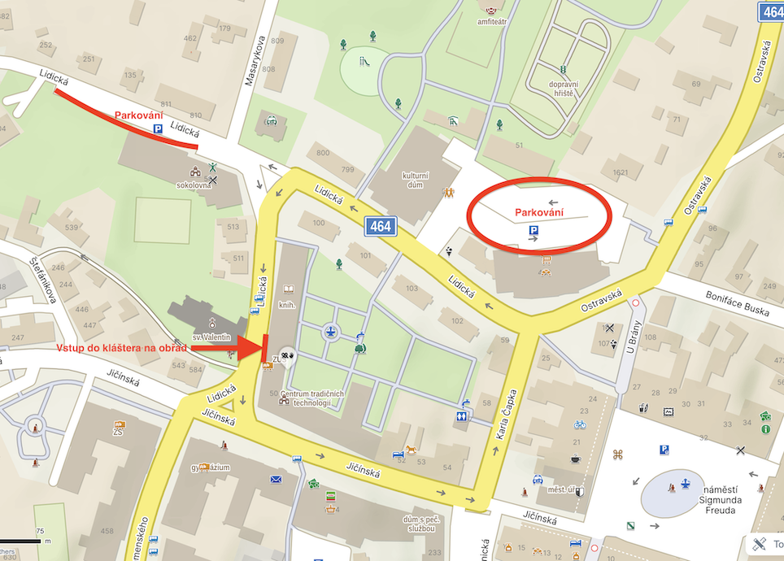
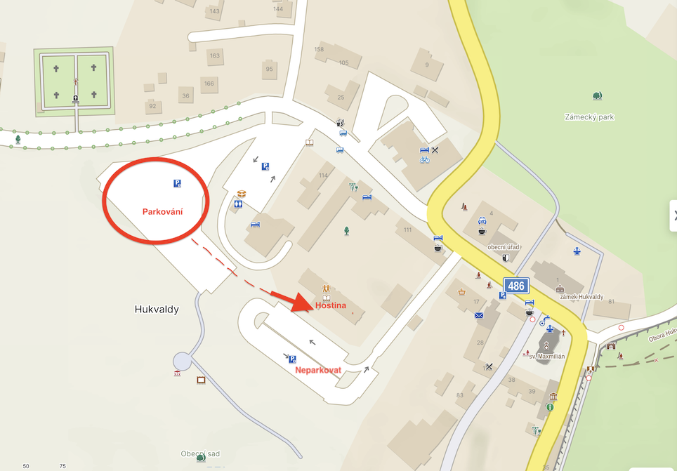

Barbora & Petr
Milí svatebčané, na této stránce naleznete veškeré informace ke svatbě. Nejdůležitější informace je, že samotný obřad se koná na jiném místě než hostina. Pokud neplánujete jet autem, dejte nám vědět a my vás propojíme s někým, s kým se budete moci svézt.
Datum a obřad
Datum: 31. října 2026
Místo obřadu: Piaristický klášter, Lidická 50, Příbor
V případě příznivého počasí bude obřad venku v zahradách.
Zobrazit na mapě: parkoviště 1, parkoviště 2, obřad
Příjezd hostů: 10:45 – 11:00
Obřad: 11:30
Hostina
Místo hostiny: Hukvaldský dvůr, Hukvaldy 211
Zobrazit na mapě: parkoviště, hostina
Doprava
Na místo obřadu i hostiny se prosím dopravte vlastními silami. Pokud nevíte, jak se tam dostat, dejte nám vědět a zkusíme vás propojit s někým, kdo jede z vašeho směru. Z hostiny je potom zajištěn odvoz hostů, nikoli však odvoz vozidel. Počítejte proto prosím s tím, že auto, které necháte na parkovišti, si budete muset vyzvednout sami.
Parkování
Příbor
Můžete zdarma zaparkovat na jednom z vyznačených parkovišť (buď u Hostince Sokolovna, nebo u Penny Marketu).

Hukvaldy
Zaparkovat můžete na obecním parkovišti. Parkoviště je placené. Prosím neparkujte na parkovišti biskupství (viz mapa níže).

Dress code
Svatební elegance – pánům doporučujeme oblek, dámám šaty ve výrazných barvách. Volbu konkrétního outfitu ale necháváme na vás – hlavně, ať se v něm cítíte dobře.
Fotky a videa
Co nafotíte a natočíte, nám prosím nasdílejte na tomto odkaze, případně pomocí QR kódu níže, ať máme co nejvíce vzpomínek.